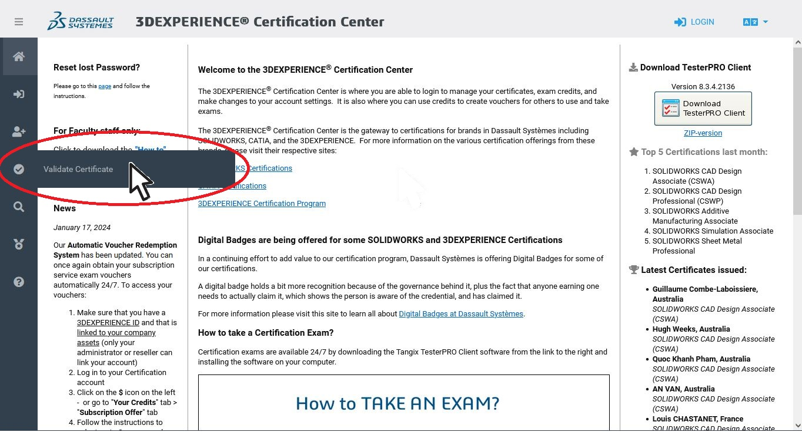

This portfolio is to demonstrate my skills in untilizing Solidworks CAD software. As of October 2024 I have passed the CSWP exam making me a a Certified SolidWorks Professional. The CSWP certificate is given out by the manufacteur of the software Dassault systems and is a marker of multiple years of experience. Please feel free to see my work in the task bar above
You can check my credentials on the solidworks site by following the following steps:
1.Clicking the following link to go to the Dassault: 3d Experience Certification Centre.
2.Click on the check mark icon on the left sidebar 
3.Input my Certificate ID:C-RKPL7V5FQS then complete the CAPTCHA and click validate